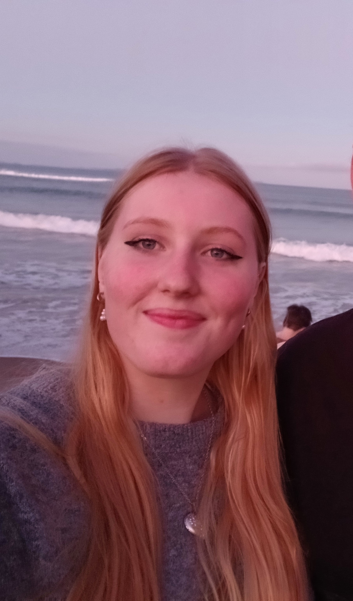

Hi, I'm Abigail Chapman, a Bachelor of Computer Systems student at EIT who has just completed her first year. Over the past two semesters I've gained a broad foundation in how technology works, from the way organisations manage information to how software is planned, designed and built. This portfolio brings together the work from my first year. In Semester 1, I explored information systems, agile project methods, data concepts and UX/UI design. In Semester 2, I moved into the technical side with computer system architecture, programming fundamentals, web development and IT concepts and tools. Together, these courses have shown me how the different parts of a tech project connect, from understanding user needs to writing the code that delivers on them. Explore the courses below to see what I built and learned along the way. I'm looking forward to continuing to grow my skills in the years ahead.
My current interests are leaning towards where business and technology meet. I currently see myself in an industry such as Strategy, Analysis and Data or Management and Delivery. These industry jobs include Business Analyst, Business Intelligence / Data Analyst, Product Manager, IT Project Manager or IT Manager. I am very strong leader and am very organised and not afraid to take charge in a group. These are just my current interests and could change during my years of study.